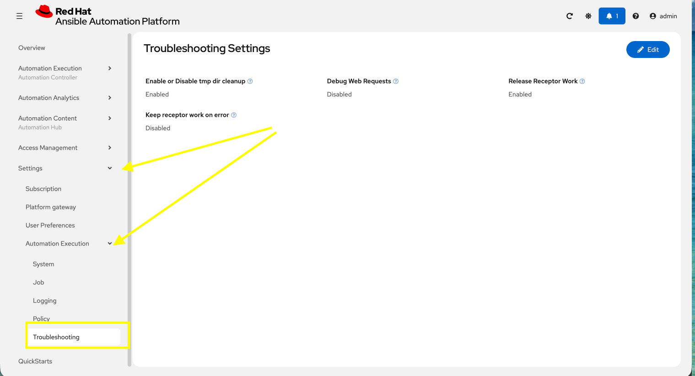
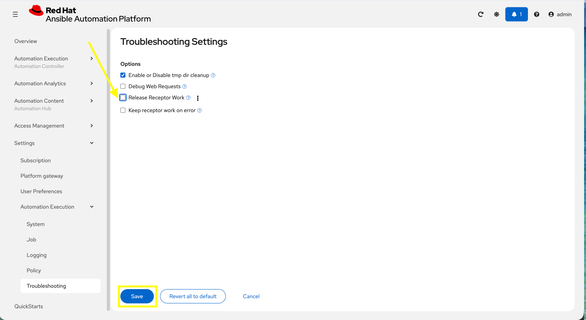
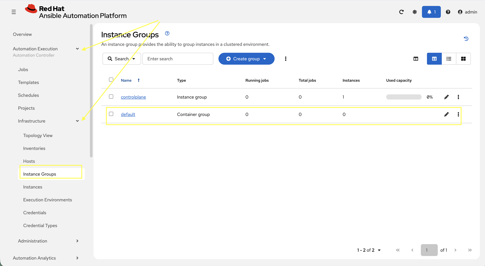
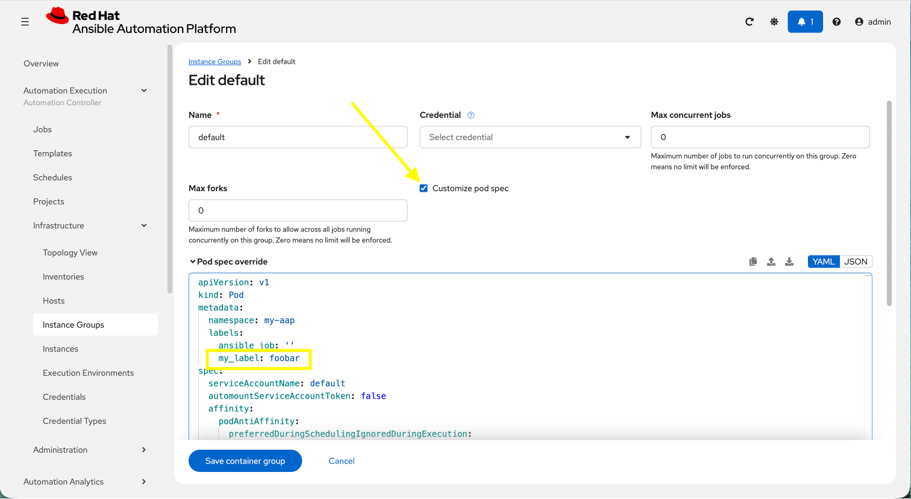

Modify the default AAP container group
The operator deployed AAP instance is pre-configured with a default Container Group. A container group is an instance group that points to an OpenShift cluster. In this case, the OpenShift cluster that the operator was installed on.
By default, the container group is setup to deploy job pods in the same namespace that the AnsibleAutomationPlatform custom resource was created within.
AAP allows you to edit the default container group, or create new ones, and modify the Kubernetes request that AAP makes for each job execution.
Before we modify the container group, let’s make a slight configuration change to the AAP deployment that will allow job containers to persist after running. This change allows us to observe the state of job pods after they have completed.
-
Log into the deployed AAP instance.
-
From the navigation menu on the left, expand Settings and expand Automation Execution and click on Troubleshooting.

-
Click on the Edit button.
-
Uncheck the Release Receptor Work checkbox.
-
Click the Save button.

Now, perform a small modification to the to the default container group on the deployed AAP instance.
-
From the navigation menu on the left, expand Automation Execution and expand Infrastructure and click on Instance Groups.

-
Click on the default container group.
-
Click the Edit container group button.
-
Check the Customize pod spec option.
-
A
Pod spec overridetext box appear once the Customize pod spec option is checked with a lengthy YAML snippet. This represents spec for the Kubernetes API request that is made by AAP each time a job pod is launched. Let’s modify the spec slightly to add a custom label to each job pod. -
Edit the
metadatakey to appear similar to the following:Custom AAP Deployment# ... other configuration metadata: namespace: my-aap labels: ansible_job: '' my_label: foobar(1) # ... other configuration1 Add this line to the metadata key. -
Click the Save container group button.

-
With the default instance group updated, let’s run a demo job and observe the job pod that is launched.
-
From the navigation menu on the left, expand Automation Execution and click on Templates.
-
Click on Demo Job Template.
-
Click the Launch template button (rocket icon).
-
Wait for the job to complete.
If the Job completes successfully, an OpenShift pod was launched and the ansible playbook was successfully executed within it. Normally, this pod would be terminated and removed upon success of the Job by AAP. However, because we unchecked the Release Receptor Work option previously, this pod will not be removed and will still be available for inspection as needed.
|
Let’s observe the created job pod in the OpenShift Web Console.
-
Navigate back to the OpenShift web console.
-
Navigate to Workloads on the left hand navigation → Pods.
-
Next to the
Project:dropdown in the top left, ensuremy-aapis the project shown.
-
-
In the filter text box, enter
automation-job. -
Click on the
automation-job-<id>-<guid>pod.
-
Observe the labels attached to this pod under
Labels.
You will see the pod has an additional label my_label=foobar as a reslt of the change we performed within the container group YAML spec.

This is a very simple example of modifying the container group specification to customize the Kubernetes pod API request. More advanced examples of customizations a user may make for real-world deployments may be:
-
Launch job Pods in a separate namespace from the core AAP platform Pods.
-
Modify the resource requests and limits of job Pods.
-
Attach volume mounts to each job Pods request.
-
Edit the affinity or anti-affinity of job Pods to certain OpenShift nodes.
This demonstrates how easy and flexible Container Groups can be to manage AAP automation workloads.